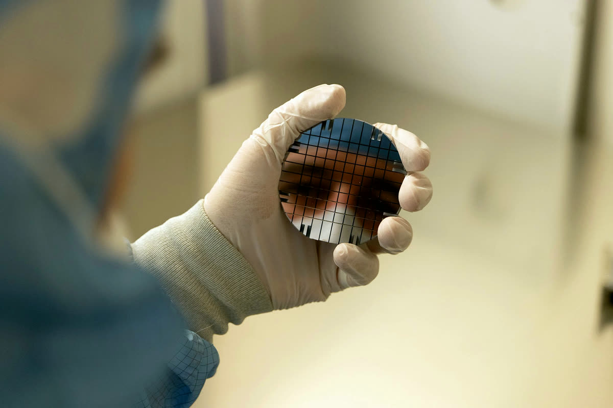

Publications
169 papers in peer-reviewed journals, from the first crystalline undulator design in 2007 to oriented-crystal calorimeters and BULLKID-DM today.
169 papers
2026, 14 papers
- Satellite-borne γ-ray astrophysics from coherent interactions in oriented crystalsMonti-Guarnieri P., Paternò G., Sytov A. … Fedeli P., Guidi V., Mazzolari A. et al. · Astronomy & Astrophysics 710, A255 (2026)
- Prospect of the NUCLEUS experiment at Chooz for coherent elastic neutrino-nucleus scattering and new physics searchesAbele H., Angloher G., Arnold B. … Mazzolari A., Romagnoni M. et al. · Physical Review D 114 (2026)
- Particle background characterization and prediction for the NUCLEUS reactor CEνNS experimentAbele H., Angloher G., Arnold B. … Mazzolari A., Romagnoni M. et al. · European Physical Journal C 86 (2026)
- Developing the Cryogenic Veto for BULLKID-DM ExperimentLari T., del Gallo Roccagiovine M., Soum-Sidikov G. … Bandiera L., Guidi V., Malagutti L. et al. · IEEE Transactions on Applied Superconductivity 36 (2026)
- Real-Time Readout System Design for the BULLKID-DM Experiment: Enhancing Dark Matter Search CapabilitiesMuscheid T., Gartmann R., Ardila-Perez L.E. … Bandiera L., Guidi V., Malagutti L. et al. · IEEE Transactions on Applied Superconductivity 36 (2026)
- Crystal fabrication techniques for enhanced performance in planar channelingRomagnoni M., Bandiera L., Canale N. … Fedeli P., Guidi V., Malagutti L. et al. · Nucl. Instrum. Methods A 1082 (2026)
- Time-resolved 3D imaging opportunities with XMPI at ForMAXRogalinski J.K., Yao Z., Zhang Y. … Mazzolari A. et al. · Journal of Synchrotron Radiation 33 (2026)
- Other science opportunities at the FCC-eeAgapov I., Alp E.E., Andre K. … Bandiera L., Mazzolari A., Paternò G. et al. · European Physical Journal Plus 141 (2026)
- Mechanical design and photodetector system of the first calorimeter prototypes based on oriented scintillating crystalsFedeli P., Selmi A., Bandiera L. … Cescato F., Guidi V., Malagutti L. et al. · Journal of Instrumentation 21 (2026)
- Energy calibration of bulk events in the BULLKID detectorFolcarelli M., Delicato D., Acevedo-Rentería A. … Bandiera L., Guidi V., Malagutti L. et al. · European Physical Journal C 86 (2026)
- Experimental investigation of cavitation dynamics at mesoscale and microscale in swirled and non-swirled venturi tubesShahsavari M., Eakins D., Vagovič P. … Mazzolari A. et al. · Physics of Fluids 38 (2026)
- Ultra-fast Small Angle Calorimeter for photon detection at KOTO IIFedeli P., Bandiera L., Canale N. … Guidi V., Malagutti L., Mazzolari A. et al. · Journal of Instrumentation 21 (2026)
- Characterization of the low energy excess using a NUCLEUS Al₂O₃ detector: NEXT CollaborationAbele H., Angloher G., Arnold B. … Mazzolari A., Romagnoni M. et al. · European Physical Journal C 86 (2026)
- Synchrotron X-ray multi-projection imaging (XMPI) for high-resolution 4D characterization of multiphase flowsRosén T., Yao Z., Tejbo J. … Mazzolari A. et al. · Experiments in Fluids 67 (2026)
2025, 15 papers
- Commissioning of the NUCLEUS Experiment at the Technical University of MunichAbele H., Angloher G., Arnold B. … Mazzolari A., Romagnoni M. et al. · Physical Review D 112 (2025)
- Decoupling pulse tube vibrations from a dry dilution refrigerator at milli-Kelvin temperaturesWex A., Rothe J., Peters L. … Mazzolari A., Romagnoni M. et al. · Journal of Instrumentation 20 (2025)
- Strong enhancement of electromagnetic shower development in oriented scintillating crystals and implications for particle detectorsSoldani M., Monti-Guarnieri P., Selmi A. … Guidi V., Malagutti L., Mazzolari A. et al. · European Physical Journal C 85 (2025)
- Apparatus for the measurement of birefringence maps of optical materials: the case of crystalline silicon for Einstein TelescopeSoflau A.M., Della Valle F., Cescato F. … Malagutti L., Mazzolari A., Romagnoni M. et al. · Applied Physics B: Lasers and Optics 131 (2025)
- Observation of Fine Structure in Channeling of Particles in Bent CrystalsMazzolari A., Backe H., Bandiera L. … Guidi V., Malagutti L., Paternò G. et al. · Physical Review Letters 135 (2025)
- Sub-keV Electron Recoil Calibration for Macroscopic Cryogenic Calorimeters Using a Novel X-ray Fluorescence SourceAbele H., Angloher G., Arnold B. … Mazzolari A., Romagnoni M. et al. · Journal of Low Temperature Physics 221 (2025)
- Performance of short and long bent crystals for the TWOCRYST experiment at the Large Hadron ColliderBandiera L., Cai R., Carsi S. … Guidi V., Malagutti L., Mazzolari A. et al. · European Physical Journal C 85 (2025)
- FCC-ee positron source from conventional to crystal-basedAlharthi F., Chaikovska I., Chehab R. … Bandiera L., Guidi V., Malagutti L. et al. · Nucl. Instrum. Methods A 1075 (2025)
- Crystal assisted steering of muons and antimuons at the muon colliderKyryllin I.V., Romagnoni M., Canale N. … Fedeli P., Guidi V., Malagutti L. et al. · Nucl. Instrum. Methods A 1075 (2025)
- Coherent radiation in axially oriented industrial-grade tungsten crystals: A viable path for an innovative γ-rays and positron sourcesCanale N., Romagnoni M., Sytov A. … Fedeli P., Guidi V., Malagutti L. et al. · Nucl. Instrum. Methods A 1075 (2025)
- Toward axial channeling deployment at the Large Hadron ColliderMirarchi D., D’Andrea M., Mazzolari A., Redaelli S. · Physical Review Accelerators and Beams 28 (2025)
- Crystal collimation of heavy-ion beams at the Large Hadron ColliderRedaelli S., Aberle O., Abramov A. … Bandiera L., Guidi V., Mazzolari A. et al. · Physical Review Accelerators and Beams 28 (2025)
- From simulation to fabrication: Realizing silicon crystalline undulators with silicon nitride stressor layer patterningMalagutti L., Bandiera L., Bonafè F. … Fedeli P., Guidi V., Paternò G. et al. · Nucl. Instrum. Methods A 1076 (2025)
- Germanium target sensed by phonon-mediated kinetic inductance detectorsDelicato D., Angelone D., Bandiera L. … Guidi V., Romagnoni M., Mazzolari A. et al. · Applied Physics Letters 126 (2025)
- A novel tool for advanced analysis of Geant4 simulations of charged particles interactions in oriented crystalsNegrello R., Bandiera L., Canale N. … Fedeli P., Guidi V., Mazzolari A. et al. · Nucl. Instrum. Methods A 1074 (2025)
2024, 14 papers
- Measurement of the K+ → π+γγ decayCortina Gil E., Kleimenova A., Minucci E. … Mazzolari A., Bandiera L., Romagnoni M. et al. · Physics Letters B 850 (2024)
- Investigation of radiation emitted by sub GeV electrons in oriented scintillator crystalsBandiera L., Camattari R., Canale N. … Guidi V., Mazzolari A., Paternò G. et al. · Nucl. Instrum. Methods A 1060 (2024)
- Advancements in experimental techniques for measuring dipole moments of short-lived particles at the LHCNeri N., Akiba K., Alessio F. … Bandiera L., Guidi V., Malagutti L. et al. · Nucl. Instrum. Methods A 1069 (2024)
- The Data Analysis of BULLKID: A Monolithic Array of Particle Absorbers Sensed by KIDsDelicato D., Ahmad A., Bandiera L. … Guidi V., Romagnoni M., Mazzolari A. et al. · Journal of Low Temperature Physics 215 (2024)
- Low-energy spectrum of the BULLKID detector array operated on surfaceDelicato D., Ahmad A., Bandiera L. … Guidi V., Romagnoni M., Mazzolari A. et al. · European Physical Journal C 84 (2024)
- Development of crystal optics for X-ray multi-projection imaging for synchrotron and XFEL sourcesBellucci V., Birnsteinova S., Sato T. … Mazzolari A., Romagnoni M. et al. · Journal of Synchrotron Radiation 31 (2024)
- Development towards high-resolution kHz-speed rotation-free volumetric imagingAsimakopoulou E.M., Bellucci V., Birnsteinova S. … Mazzolari A., Romagnoni M. et al. · Optics Express 32 (2024)
- Feasibility of using crystal channeling for the beam loss mitigation in slow extraction at 8GeVNagaslaev V., Tropin I., Esposito L. … Bandiera L., Guidi V., Mazzolari A. et al. · Nucl. Instrum. Methods A 1058 (2024)
- Multiple scattering of positively charged particles moving near the (111) plane in a silicon single crystalScandale W., Cerutti F., Esposito L.S. … Bandiera L., Guidi V., Mazzolari A. et al. · European Physical Journal Plus 139 (2024)
- A plastic scintillation muon veto for sub-Kelvin temperaturesErhart A., Wagner V., Wex A. … Mazzolari A., Romagnoni M. et al. · European Physical Journal C 84 (2024)
- Characterization of bent crystals for beam collimation with 6.8 TeV proton beams at the LHCD’Andrea M., Aberle O., Abramov A. … Bandiera L., Guidi V., Mazzolari A. et al. · Nucl. Instrum. Methods A 1060 (2024)
- High-precision alignment techniques for realizing an ultracompact electromagnetic calorimeters using oriented high-Z scintillator crystalsMalagutti L., Selmi A., Bandiera L. … Guidi V., Mazzolari A., Paternò G. et al. · Nucl. Instrum. Methods A 1069 (2024)
- Particle identification capability of a homogeneous calorimeter composed of oriented crystalsMonti-Guarnieri P., Bandiera L., Canale N. … Guidi V., Malagutti L., Mazzolari A. et al. · Journal of Instrumentation 19 (2024)
- Radiation in oriented crystals: Innovative application to future positron sourcesSoldani M., Alharthi F., Bandiera L. … Guidi V., Mazzolari A., Paternò G. et al. · Nucl. Instrum. Methods A 1058 (2024)
2023, 11 papers
- Nuclear physics midterm plan at Legnaro National Laboratories (LNL)Ballan M., Bottoni S., Caamaño M. … Mazzolari A. et al. · European Physical Journal Plus 138 (2023)
- A study of the K⁺ → π⁰e⁺νγ decayCortina Gil E., Kleimenova A., Minucci E. … Mazzolari A., Bandiera L., Romagnoni M. et al. · Journal of High Energy Physics 2023 (2023)
- Search for dark photon decays to μ⁺μ⁻ at NA62Cortina Gil E., Jerhot J., Kleimenova A. … Mazzolari A., Bandiera L., Romagnoni M. et al. · Journal of High Energy Physics 2023 (2023)
- Improved calorimetric particle identification in NA62 using machine learning techniquesCortina Gil E., Kleimenova A., Minucci E. … Mazzolari A., Bandiera L., Romagnoni M. et al. · Journal of High Energy Physics 2023 (2023)
- Search for K+ decays into the π+e+e−e+e− final stateCortina Gil E., Kleimenova A., Minucci E. … Mazzolari A., Bandiera L., Romagnoni M. et al. · Physics Letters B 846 (2023)
- Strong enhancement of electromagnetic shower development induced by high-energy photons in a thick oriented tungsten crystalSoldani M., Bandiera L., Moulson M. … Guidi V., Mazzolari A., Romagnoni M. et al. · European Physical Journal C 83 (2023)
- A highly-compact and ultra-fast homogeneous electromagnetic calorimeter based on oriented lead tungstate crystalsBandiera L., Baryshevsky V.G., Canale N. … Guidi V., Malagutti L., Mazzolari A. et al. · Frontiers in Physics 11 (2023)
- Hard X-ray stereographic microscopy for single-shot differential phase imagingBellucci V., Zdora M.-C., Mikeš L. … Romagnoni M., Mazzolari A. et al. · Optics Express 31 (2023)
- Experimental layout for the direct measurement of electromagnetic shower acceleration in an oriented crystal scintillatorSelmi A., Soldani M., Bandiera L. … Guidi V., Mazzolari A., Romagnoni M. et al. · Nucl. Instrum. Methods A 1048 (2023)
- Observation of a Nuclear Recoil Peak at the 100 eV Scale Induced by Neutron CaptureAbele H., Angloher G., Bento A. … Mazzolari A., Romagnoni M. et al. · Physical Review Letters 130 (2023)
- Towards a muon colliderAccettura C., Adams D., Agarwal R. … Bandiera L., Mazzolari A., Romagnoni M. et al. · European Physical Journal C 83 (2023)
2022, 11 papers
- Development of a compact muon veto for the Nucleus experimentWagner V., Rogly R., Erhart A. … Guidi V., Mazzolari A. et al. · Journal of Instrumentation 17 (2022)
- The GALORE projectRomagnoni M., Bandiera L., Carraro C. … Guidi V., Mazzolari A., Sytov A. et al. · European Physical Journal D 76 (2022)
- Comment on 'Design and modeling of a Laue lens for radiation therapy with hard x-ray photons'Paterno G., Marziani M., Camattari R. … Mazzolari A., Guidi V. et al. · Physics in Medicine and Biology 67 (2022)
- Multiple scattering of channeled and non-channeled positively charged particles in bent monocrystalline siliconScandale W., Arduini G., Cerutti F. … Bandiera L., Guidi V., Mazzolari A. et al. · European Physical Journal Plus 137 (2022)
- Nucleus: Searching for Coherent Neutrino Nucleus Scattering at Lowest EnergiesKluck H., Angloher G., Bento A. … Guidi V., Mazzolari A. et al. · Journal of Low Temperature Physics 209 (2022)
- Bent Crystal Design and Characterization for High-Energy Physics ExperimentsRomagnoni M., Guidi V., Bandiera L. … Mazzolari A., Sytov A. et al. · Crystals 12 (2022)
- Crystal-based pair production for a lepton collider positron sourceBandiera L., Bomben L., Camattari R. … Guidi V., Mazzolari A., Romagnoni M. et al. · European Physical Journal C 82 (2022)
- MBN explorer atomistic simulations of 855 MeV electron propagation and radiation emission in oriented silicon bent crystal: theory versus experimentHaurylavets V.V., Leukovich A., Sytov A. … Bandiera L., Mazzolari A., Romagnoni M. et al. · European Physical Journal Plus 137 (2022)
- Feasibility of crystal-assisted collimation in the CERN accelerator complexScandale W., Arduini G., Assmann R. … Bandiera L., Guidi V., Mazzolari A. et al. · International Journal of Modern Physics A 37 (2022)
- First design of a crystal-based extraction of 6 GeV electrons for the DESY II Booster SynchrotronSytov A., Kube G., Bandiera L. … Guidi V., Romagnoni M., Mazzolari A. et al. · European Physical Journal C 82 (2022)
- BULLKID: Monolithic array of particle absorbers sensed by kinetic inductance detectorsCruciani A., Bandiera L., Calvo M. … Guidi V., Romagnoni M., Mazzolari A. et al. · Applied Physics Letters 121 (2022)
2021, 5 papers
- New method for the production of thin and stable, segmented n⁺ contacts in HPGe detectorsBertoldo S., Maggioni G., Raniero W. … Mazzolari A. et al. · European Physical Journal A 57 (2021)
- Progress towards the first measurement of charm baryon dipole momentsS Aiola, L Bandiera, G Cavoto et al. · Physical Review D 103 (2021)
- Investigation on radiation generated by sub-GeV electrons in ultrashort silicon and germanium bent crystalsBandiera L., Sytov A., De Salvador D. … Mazzolari A., Guidi V., Romagnoni M. et al. · European Physical Journal C 81 (2021)
- Investigation on steering of ultrarelativistic e± beam through an axially oriented bent crystalBandiera L., Kyryllin I.V., Brizzolari C. … Guidi V., Mazzolari A., Romagnoni M. et al. · European Physical Journal C 81 (2021)
- Silicon crystals for steering high-intensity particle beams at ultrahigh-energy acceleratorsMazzolari A., Romagnoni M., Bagli E. … Bandiera L., Sytov A., Guidi V. et al. · Physical Review Research 3 (2021)
2020, 4 papers
- BULLKID: BULky and Low-Threshold Kinetic Inductance DetectorsColantoni I., Bellenghi C., Calvo M. … Guidi V., Mazzolari A., Romagnoni M. et al. · Journal of Low Temperature Physics 199 (2020)
- Observation of strong reduction of multiple scattering for channeled particles in bent crystalsScandale W., Arduini G., Cerutti F. … Bandiera L., Romagnoni M., Guidi V. et al. · Physics Letters B 804 (2020)
- X-ray characterization of self-standing bent Si crystal plates for Large Hadron Collider beam extractionCamattari R., Romagnoni M., Bandiera L. … Mazzolari A., Sytov A., Guidi V. et al. · Journal of Applied Crystallography 53 (2020)
- Broad angular anisotropy of multiple scattering in a Si crystalMazzolari A., Sytov A., Bandiera L. … Romagnoni M., Guidi V. et al. · European Physical Journal C 80 (2020)
2019, 6 papers
- Enhancement of the Inelastic Nuclear Interaction Rate in Crystals via AntichannelingBagli E., De Salvador D., Bacci L. … Bandiera L., Mazzolari A., Sytov A. et al. · Physical Review Letters 123 (2019)
- Photon emission by volume reflected electrons in bent crystalsNielsen C.F., Uggerhøj U.I., Holtzapple R. … Bandiera L., Guidi V., Mazzolari A. et al. · Physical Review Accelerators and Beams 22 (2019)
- Beam steering performance of bent silicon crystals irradiated with high-intensity and high-energy protonsScandale W., Calviani M., D’Andrea M. … Bandiera L., Guidi V., Mazzolari A. et al. · European Physical Journal C 79 (2019)
- Focusing of 180 GeV/c pions from a point-like source into a parallel beam by a bent silicon crystalScandale W., Arduini G., Cerutti F. … Bandiera L., Romagnoni M., Guidi V. et al. · Nucl. Instrum. Methods B 446 (2019)
- Silicon crystalline undulator prototypes: Manufacturing and X-ray characterizationCamattari R., Bandiera L., Tikhomirov V. … Romagnoni M., Sytov A., Mazzolari A. et al. · Physical Review Accelerators and Beams 22 (2019)
- Dechanneling of high energy particles in a long bent crystalScandale W., Arduini G., Cerutti F. … Bandiera L., Romagnoni M., Guidi V. et al. · Nucl. Instrum. Methods B 438 (2019)
2018, 8 papers
- A method to align a bent crystal for channeling experiments by using quasichanneling oscillationsSytov A.I., Guidi V., Tikhomirov V.V. … Bandiera L., Mazzolari A., Romagnoni M. et al. · Journal of Instrumentation 13 (2018)
- Innovative remotely-controlled bending device for thin silicon and germanium crystalsSalvador D.D., Carturan S., Mazzolari A. … Bandiera L., Guidi V., Romagnoni M. et al. · Journal of Instrumentation 13 (2018)
- Bent crystals for efficient beam steering of multi TeV-particle beamsMazzolari A., Romagnoni M., Camattari R. … Bandiera L., Guidi V. et al. · European Physical Journal C 78 (2018)
- Thick self-standing bent crystals as optical elements for a Laue lens for applications in astrophysicsCamattari R., Romagnoni M., Mazzolari A., Paternò G., Guidi V., Buslaps T. · Experimental Astronomy 46 (2018)
- Strong Reduction of the Effective Radiation Length in an Axially Oriented Scintillator CrystalBandiera L., Tikhomirov V.V., Romagnoni M. … Mazzolari A., Sytov A. et al. · Physical Review Letters 121 (2018)
- Study of inelastic nuclear interactions of 400 GeV/c protons in bent silicon crystals for beam steering purposesScandale W., Andrisani F., Arduini G. … Bandiera L., Guidi V., Mazzolari A. et al. · European Physical Journal C 78 (2018)
- Comprehensive study of beam focusing by crystal devicesW. Scandale, G. Arduini M. Butcher F. Cerutti, M. Garattini et al. · Physical Review Accelerators and Beams 21 (2018)
- Focusing of a particle beam by a crystal device with a short focal lengthW. Scandale, G. Arduini M. Butcher F. Cerutti, M. Garattini et al. · Nucl. Instrum. Methods B 414 (2018)
2017, 10 papers
- Measurements of multiple scattering of high energy protons in bent silicon crystalsScandale W., Arduini G., Butcher M. … Bandiera L., Guidi V., Mazzolari A. et al. · Nucl. Instrum. Methods B 402 (2017)
- Splitting of a high-energy positively-charged particle beam with a bent crystalBandiera L., Kirillin I.V., Bagli E. … Guidi V., Mazzolari A., Sytov A. et al. · Nucl. Instrum. Methods B 402 (2017)
- Bent silicon strip crystals for high-energy charged particle beam collimationGermogli G., Mazzolari A., Guidi V., Romagnoni M. · Nucl. Instrum. Methods B 402 (2017)
- Channeling and radiation experiments at SLACWienands U., Gessner S., Hogan M.J. … Bandiera L., Mazzolari A., Guidi V. et al. · Nucl. Instrum. Methods B 402 (2017)
- Steering of Sub-GeV electrons by ultrashort Si and Ge bent crystalsSytov A.I., Bandiera L., De Salvador D. … Mazzolari A., Guidi V., Romagnoni M. et al. · European Physical Journal C 77 (2017)
- Electromagnetic dipole moments of charged baryons with bent crystals at the LHCBagli E., Bandiera L., Cavoto G. … Guidi V., Mazzolari A. et al. · European Physical Journal C 77 (2017)
- Experimental evidence of independence of nuclear de-channeling length on the particle charge signBagli E., Guidi V., Mazzolari A. … Bandiera L., Sytov A.I. et al. · European Physical Journal C 77 (2017)
- Observation of Quasichanneling OscillationsWistisen T.N., Mikkelsen R.E., Uggerhøj U.I. … Guidi V., Mazzolari A., Bandiera L. et al. · Physical Review Letters 119 (2017)
- Influence of incoherent scattering on stochastic deflection of high-energy negative particle beams in bent crystalsKirillin I.V., Shul’ga N.F., Bandiera L., Guidi V., Mazzolari A. · European Physical Journal C 77 (2017)
- Homogeneous self-standing curved monocrystals, obtained using sandblasting, to be used as manipulators of hard X-rays and charged particle beamsCamattari R., Paternò G., Romagnoni M., Bellucci V., Mazzolari A., Guidi V. · Journal of Applied Crystallography 50 (2017)
2016, 7 papers
- Origin of quasi-mosaic effect for symmetric skew planes in a silicon or germanium plateBellucci V., Camattari R., Paternò G., Guidi V., Mazzolari A. · Journal of Applied Crystallography 49 (2016)
- Channeling, volume reflection, and volume capture study of electrons in a bent silicon crystalWistisen T.N., Uggerhøj U.I., Wienands U. … Bandiera L., Guidi V., Mazzolari A. et al. · Physical Review Accelerators and Beams 19 (2016)
- High-efficiency deflection of high energy protons due to channeling along the (110) axis of a bent silicon crystalScandale W., Arduini G., Butcher M. … Bandiera L., Guidi V., Mazzolari A. et al. · Physics Letters B 760 (2016)
- Observation of channeling for 6500 GeV/c protons in the crystal assisted collimation setup for LHCScandale W., Arduini G., Butcher M. … Bandiera L., Guidi V., Mazzolari A. et al. · Physics Letters B 758 (2016)
- Laue lens to focus an X-ray beam for radiation therapyPaternò G., Marziani M., Camattari R. … Mazzolari A., Guidi V. et al. · Journal of Applied Crystallography 49 (2016)
- Planar channeling and quasichanneling oscillations in a bent crystalSytov A.I., Guidi V., Tikhomirov V.V. … Bandiera L., Mazzolari A. et al. · European Physical Journal C 76 (2016)
- Relaxation of axially confined 400 GeV/c protons to planar channeling in a bent crystalBandiera L., Mazzolari A., Bagli E. … Guidi V., Sytov A. et al. · European Physical Journal C 76 (2016)
2015, 12 papers
- Manufacturing and characterization of bent silicon crystals for studies of coherent interactions with negatively charged particles beamsGermogli G., Mazzolari A., Bandiera L., Bagli E., Guidi V. · Nucl. Instrum. Methods B 355 (2015)
- Manufacturing of advanced bent crystals for Laue Optics for Gamma ObservationS (LOGOS)Mazzolari A., Camattari R., Bellucci V. … Paternò G., Guidi V. et al. · Nucl. Instrum. Methods B 355 (2015)
- Backscattering/transmission of 2 MeV He⁺⁺ ions quantitative correlation studyBerec V., Germogli G., Mazzolari A., Guidi V., De Salvador D., Bacci L. · Nucl. Instrum. Methods B 355 (2015)
- Ion implantation for manufacturing bent and periodically bent crystalsBellucci V., Camattari R., Guidi V. … Mazzolari A., Paternò G. et al. · Applied Physics Letters 107 (2015)
- The 'quasi-mosaic' effect in crystals and its applications in modern physicsCamattari R., Guidi V., Bellucci V., Mazzolari A. · Journal of Applied Crystallography 48 (2015)
- Comparative results on the deflection of positively and negatively charged particles by multiple volume reflections in a multi-strip silicon deflectorScandale W., Arduini G., Butcher M. … Bandiera L., Guidi V., Mazzolari A. et al. · JETP Letters 101 (2015)
- Observation of nuclear dechanneling length reduction for high energy protons in a short bent crystalScandale W., Arduini G., Butcher M. … Bandiera L., Guidi V., Mazzolari A. et al. · Physics Letters B 743 (2015)
- Observation of strong leakage reduction in crystal assisted collimation of the SPS beamScandale W., Arduini G., Butcher M. … Bandiera L., Guidi V., Mazzolari A. et al. · Physics Letters B 748 (2015)
- The experimental setup of the Interaction in Crystals for Emission of RADiation collaboration at Mainzer Mikrotron: Design, commissioning, and testsLietti D., Backe H., Bagli E. … Bandiera L., Guidi V., Mazzolari A. et al. · Review of Scientific Instruments 86 (2015)
- Investigation of the Electromagnetic Radiation Emitted by Sub-GeV Electrons in a Bent CrystalBandiera L., Bagli E., Germogli G. … Guidi V., Mazzolari A. et al. · Physical Review Letters 115 (2015)
- Orientational Coherent Effects of High-Energy Particles in a LiNbO₃ CrystalBagli E., Guidi V., Mazzolari A. … Bandiera L., Sytov A.I. et al. · Physical Review Letters 115 (2015)
- Observation of deflection of a beam of multi-GeV electrons by a thin crystalWienands U., Markiewicz T.W., Nelson J. … Bandiera L., Guidi V., Mazzolari A. et al. · Physical Review Letters 114 (2015)
2014, 7 papers
- Steering of a Sub-GeV electron beam through planar channeling enhanced by rechannelingMazzolari A., Bagli E., Bandiera L. … Guidi V. et al. · Physical Review Letters 112 (2014)
- Observation of focusing of 400 GeV/c proton beam with the help of bent crystalsScandale W., Arduini G., Butcher M. … Bandiera L., Guidi V., Mazzolari A. et al. · Physics Letters B 733 (2014)
- High diffraction efficiency with hard X-rays through a thick silicon crystal bent by carbon fiber depositionCamattari R., Dolcini E., Bellucci V., Mazzolari A., Guidi V. · Journal of Applied Crystallography 47 (2014)
- Experimental evidence of planar channeling in a periodically bent crystalBagli E., Bandiera L., Bellucci V. … Guidi V., Mazzolari A. et al. · European Physical Journal C 74 (2014)
- Mirroring of 400 GeV/c protons by an ultra-thin straight crystalScandale W., Arduini G., Butcher M. … Bandiera L., Guidi V., Mazzolari A. et al. · Physics Letters B 734 (2014)
- Steering efficiency of a ultrarelativistic proton beam in a thin bent crystalBagli E., Bandiera L., Guidi V. … Mazzolari A. et al. · European Physical Journal C 74 (2014)
- Deflection of high energy protons by multiple volume reflections in a modified multi-strip silicon deflectorScandale W., Arduini G., Butcher M. … Bandiera L., Guidi V., Mazzolari A. et al. · Nucl. Instrum. Methods B 338 (2014)
2013, 7 papers
- On the radiation accompanying volume reflectionBandiera L., Bagli E., Berra A. … Guidi V., Mazzolari A. et al. · Nucl. Instrum. Methods B 309 (2013)
- Fabrication of large area silicon nanothickness membranes for channeling experimentsMazzolari A., Guidi V., Salvador D.D., Bacci L. · Nucl. Instrum. Methods B 309 (2013)
- Broad and intense radiation accompanying multiple volume reflection of ultrarelativistic electrons in a bent crystalBandiera L., Bagli E., Guidi V. … Mazzolari A. et al. · Physical Review Letters 111 (2013)
- Measurement of the dechanneling length for high-energy negative pionsScandale W., Losito R., Bagli E. … Bandiera L., Guidi V., Mazzolari A. et al. · Physics Letters B 719 (2013)
- Coherent effects of high-energy particles in a graded Si 1-xGex crystalBagli E., Bandiera L., Guidi V. … Mazzolari A. et al. · Physical Review Letters 110 (2013)
- Optimization of the crystal assisted collimation of the SPS beamScandale W., Arduini G., Butcher M. … Bandiera L., Guidi V., Mazzolari A. et al. · Physics Letters B 726 (2013)
- Highly bent (110) Ge crystals for efficient steering of ultrarelativistic beamsDe Salvador D., Maggioni G., Carturan S. … Mazzolari A., Bandiera L., Guidi V. et al. · Journal of Applied Physics 114 (2013)
2012, 5 papers
- Germanium strips for channeling: Study of the crystal quality after slicing and chemical etchingCarturan S., De Salvador D., Lytovchenko O. … Mazzolari A., Guidi V. et al. · Materials Chemistry and Physics 132 (2012)
- Strong reduction of the off-momentum halo in crystal assisted collimation of the SPS beamScandale W., Arduini G., Assmann R. … Guidi V., Mazzolari A. et al. · Physics Letters B 714 (2012)
- Radiation emission phenomena in bent silicon crystals: Theoretical and experimental studies with 120 GeV/c positronsLietti D., Bagli E., Baricordi S. … Guidi V., Mazzolari A. et al. · Nucl. Instrum. Methods B 283 (2012)
- A topologically connected multistrip crystal for efficient steering of high-energy beamBagli E., Bandiera L., Dalpiaz P. … Guidi V., Mazzolari A. et al. · Journal of Instrumentation 7 (2012)
- Deflection of MeV protons by an unbent half-wavelength silicon crystalGuidi V., Mazzolari A., De Salvador D., Bacci L. · Physical Review Letters 108 (2012)
2011, 8 papers
- The UA9 experimental layoutScandale W., Arduini G., Assmann R. … Guidi V., Mazzolari A. et al. · Journal of Instrumentation 6 (2011)
- Bending of silicon plate crystals through superficial grooving: Modeling and experimentationBellucci V., Camattari R., Guidi V., Mazzolari A. · Thin Solid Films 520 (2011)
- Patterning and modeling of mechanically bent silicon plates deformed through coactive stressesGuidi V., Lanzoni L., Mazzolari A. · Thin Solid Films 520 (2011)
- Comparative results on collimation of the SPS beam of protons and Pb ions with bent crystalsScandale W., Arduini G., Assmann R. … Guidi V., Mazzolari A. et al. · Physics Letters B 703 (2011)
- Steering of an ultrarelativistic proton beam by a bent germanium crystalDe Salvador D., Bagli E., Lytovchenko O. … Mazzolari A., Guidi V. et al. · Applied Physics Letters 98 (2011)
- Observation of parametric X-rays produced by 400 GeV/c protons in bent crystalsScandale W., Arduini G., Assmann R. … Guidi V., Mazzolari A. et al. · Physics Letters B 701 (2011)
- Observation of multiple volume reflection by different planes in one bent silicon crystal for high-energy negative particlesScandale W., Vomiero A., Bagli E. … Guidi V., Mazzolari A. et al. · EPL 93 (2011)
- Volume reflection observations in bent crystals with 13 GeV/c particlesHasan S., Bolognini D., Dalpiaz P. … Guidi V., Mazzolari A. et al. · Nucl. Instrum. Methods B 269 (2011)
2010, 7 papers
- Deflection of high-energy negative particles in a bent crystal through axial channeling and multiple volume reflection stimulated by doughnut scatteringScandale W., Vomiero A., Bagli E. … Guidi V., Mazzolari A. et al. · Physics Letters B 693 (2010)
- First results on the SPS beam collimation with bent crystalsScandale W., Arduini G., Assmann R. … Guidi V., Mazzolari A. et al. · Physics Letters B 692 (2010)
- Probability of inelastic nuclear interactions of high-energy protons in a bent crystalScandale W., Losito R., Silari M. … Guidi V., Mazzolari A. et al. · Nucl. Instrum. Methods B 268 (2010)
- Note: Rigid holder to host and bend a crystal for multiple volume reflection of a particle beamCarassiti V., Dalpiaz P., Guidi V., Mazzolari A., Melchiorri M. · Review of Scientific Instruments 81 (2010)
- Study of anticlastic deformation in a silicon crystal for channeling experimentsGuidi V., Lanzoni L., Mazzolari A. · Journal of Applied Physics 107 (2010)
- On the observation of multiple volume reflection from different planes inside one bent crystalGuidi V., Mazzolari A., Tikhomirov V. · Journal of Applied Physics 107 (2010)
- Multiple volume reflections of high-energy protons in a sequence of bent silicon crystals assisted by volume captureScandale W., Vomiero A., Bagli E. … Guidi V., Mazzolari A. et al. · Physics Letters B 688 (2010)
2009, 8 papers
- Observation of multiple volume reflection of ultrarelativistic protons by a sequence of several bent silicon crystalsScandale W., Vomiero A., Baricordi S. … Guidi V., Mazzolari A. et al. · Physical Review Letters 102 (2009)
- High-efficiency deflection of high-energy negative particles through axial channeling in a bent crystalScandale W., Vomiero A., Bagli E. … Guidi V., Mazzolari A. et al. · Physics Letters B 680 (2009)
- Silicon crystal for channelling of negatively charged particlesGuidi V., Mazzolari A., De Salvador D., Carnera A. · Journal of Physics D: Applied Physics 42 (2009)
- Observation of nuclear dechanneling for high-energy protons in crystalsScandale W., Vomiero A., Baricordi S. … Guidi V., Mazzolari A. et al. · Physics Letters B 680 (2009)
- Observation of channeling and volume reflection in bent crystals for high-energy negative particlesScandale W., Vomiero A., Bagli E. … Guidi V., Mazzolari A. et al. · Physics Letters B 681 (2009)
- Increase in probability of ion capture into the planar channelling regime by a buried oxide layerGuidi V., Mazzolari A., Tikhomirov V.V. · Journal of Physics D: Applied Physics 42 (2009)
- Experimental study of the radiation emitted by 180-GeV/c electrons and positrons volume-reflected in a bent crystalScandale W., Vomiero A., Baricordi S. … Guidi V., Mazzolari A. et al. · Physical Review A - Atomic, Molecular, and Optical Physics 79 (2009)
- First observation of multiple volume reflection by different planes in one bent silicon crystal for high-energy protonsScandale W., Vomiero A., Bagli E. … Guidi V., Mazzolari A. et al. · Physics Letters B 682 (2009)
2008, 7 papers
- High-efficiency deflection of high-energy protons through axial channeling in a bent crystalScandale W., Vomiero A., Baricordi S. … Guidi V., Mazzolari A. et al. · Physical Review Letters 101 (2008)
- Volume reflection dependence of 400GeV/c protons on the bent crystal curvatureScandale W., Vomiero A., Baricordi S. … Guidi V., Mazzolari A. et al. · Physical Review Letters 101 (2008)
- Shaping of silicon crystals for channelling experiments through anisotropic chemical etchingBaricordi S., Guidi V., Mazzolari A., Vincenzi D., Ferroni M. · Journal of Physics D: Applied Physics 41 (2008)
- Deflection of 400GeV/c proton beam with bent silicon crystals at the CERN Super Proton SynchrotronScandale W., Carnera A., Della Mea G. … Guidi V., Mazzolari A. et al. · Physical Review Special Topics - Accelerators and Beams 11 (2008)
- On the mechanical behaviour of a crystalline undulatorLanzoni L., Mazzolari A., Guidi V., Tralli A., Martinelli G. · International Journal of Engineering Science 46 (2008)
- Apparatus to study crystal channeling and volume reflection phenomena at the SPS H8 beamlineScandale W., Efthymiopoulos I., Still D.A. … Guidi V., Mazzolari A. et al. · Review of Scientific Instruments 79 (2008)
- Double volume reflection of a proton beam by a sequence of two bent crystalsScandale W., Carnera A., Della Mea G. … Guidi V., Mazzolari A. et al. · Physics Letters B 658 (2008)
2007, 3 papers
- Optimal crystal surface for efficient channeling in the new generation of hadron machinesBaricordi S., Guidi V., Mazzolari A. et al. · Applied Physics Letters 91 (2007)
- High-efficiency volume reflection of an ultrarelativistic proton beam with a bent silicon crystalScandale W., Still D.A., Carnera A. … Guidi V., Mazzolari A. et al. · Physical Review Letters 98 (2007)
- Design of a crystalline undulator based on patterning by tensile Si₃N₄ strips on a Si crystalGuidi V., Lanzoni L., Mazzolari A., Martinelli G., Tralli A. · Applied Physics Letters 90 (2007)
No paper matches this search. Try fewer words, or a surname, a journal or a year, or choose all research lines.